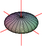

| Eleventh Homework (Due Thursday 9 November in recitation): Here is a pdf of the assignment. LaTeX source, and some images HW11_1.pdf, HW11_2.pdf, HW11_3.pdf, and HW11_4.pdf. |
| Tenth Homework (Due Thursday 2 November in recitation): Here is a pdf of the assignment. LaTeX source, and some images HW10_1.pdf, HW10_2.pdf, and HW10_3.pdf. |
| Ninth Homework (Due Thursday 26 October in recitation): Here is a pdf of the assignment. There are more problems than usual in this assignment. |
| Fourth Homework (Due Thursday 14 September): Here is a pdf of the assignment. |
|  | Third Homework (Due Thursday 7 September): Here is a pdf of the assignment. Its first page is the quadrics homework I handed out on Friday, September 1. |
Last modified: Sun Oct 29 16:25:21 CDT 2023 by sottile